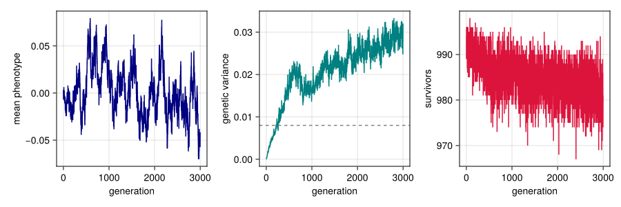
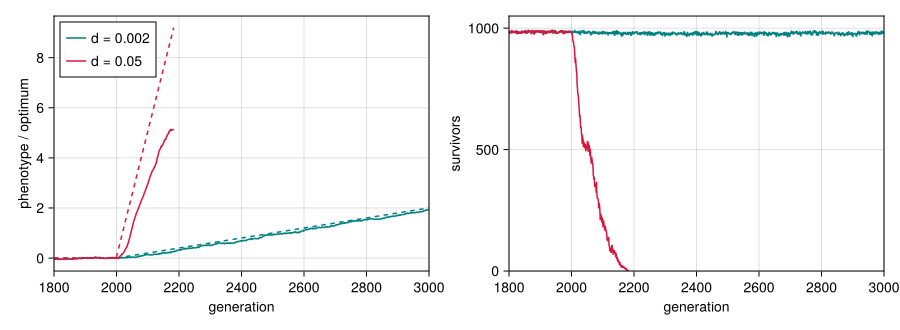

Getting started
Simon Frost
Overview
QTLSim.jl simulates the quantitative-genetic model of Pagel, Gardner and Meade (Pagel et al. 2025), who used it to ask how fast a population can track a steadily changing environment before it goes extinct. Their simulations were run with QTSim, a C program by Andrew Meade; this package is a Julia port of it, built around a fast kernel that reproduces QTSim’s output (see Validation against QTSim). An optional categorical layer, loaded with Catlab, describes the population and its life cycle as a composition of operators (The categorical layer).
The model follows a population of $N$ diploid individuals with one quantitative trait.
- Each individual carries two copies of
NoQTLloci. Its genotype $G$ is the sum of the allelic effects at all of them, and its phenotype is $z = G + E$, where the environmental deviation $E$ is drawn from $\mathcal{N}(0, V_E)$ at birth. - Selection is on viability: an individual survives with probability $W(z) = \exp\!\left(-(z-\theta)^2 / 2\omega^2\right)$, a Gaussian fitness function with optimum $\theta$ and width $\omega$ (up to a constant close to one, which the package keeps exactly as QTSim computes it).
- The survivors mate at random. Each of the $N$ offspring has two distinct parents, each of which passes on a gamete made by recombining its two chromosomes.
- Each offspring chromosome receives a Poisson number of mutations, each adding a Gaussian effect to a randomly chosen locus.
This vignette runs the model once, looks at what it returns, and then lets the optimum move, which is the experiment at the heart of the paper.
Setup
using QTLSim
using CairoMakie, Printf, Statistics
CairoMakie.activate!(type = "png")Parameters
A simulation is described by a Params value. Its defaults are QTSim’s, and its fields follow QTSim’s options with a few differences in name: Generations is NoGenerations, RecombinationPoissonMean is RecombPoissonMean and OptimumMoveType is MoveType, and the two-value options MoveFitnessSD and ChangeFitnessSD are each split into a generation and a value. The phenotypic variance $V_P$ and heritability $h^2$ fix the genetic and environmental variances the model aims for, $V_G = h^2 V_P$ and $V_E = (1-h^2) V_P$; the mutation scalar $m$ sets the new variance mutation adds each generation, $V_m = m V_E$.
p = Params(PopSize = 1000, Ploidy = 2, NoQTL = 100, NoGenerations = 3000,
PhenotypeVar = 0.02, Heritability = 0.4, MutationScalar = 0.004,
MutationRatePerGamete = 1e-4, RecombPoissonMean = 3.0)
@printf("target genetic variance V_G = h²·V_P %.4f\n", geneticVar(p))
@printf("environmental variance V_E = (1−h²)·V_P %.4f\n", envVar(p))
@printf("mutational input V_m = m·V_E %.2e per generation\n", muteVar(p))
@printf("fitness width ω %.3f\n", initFitSD(p))target genetic variance V_G = h²·V_P 0.0080
environmental variance V_E = (1−h²)·V_P 0.0120
mutational input V_m = m·V_E 4.80e-05 per generation
fitness width ω 1.155MutationRatePerGamete is the mutation rate per locus per gamete, so each chromosome receives on average NoQTL × MutationRatePerGamete = 0.01 mutations per generation. RecombPoissonMean is the mean number of crossover points drawn per gamete. When InitFitnessSD is left at its default, the width $\omega$ is QTSim’s “analytical” value $\omega = V_G / \sqrt{m V_E}$; the next vignette explains where it comes from.
A first run
simulate builds the population, runs it for NoGenerations generations and returns one record per sampled generation (every generation here, since Sample = 1). The genomes start at zero, so the genetic variance starts at zero too and builds up through mutation.
out = simulate(p; seed = 1)
keys(out)(:extinct, :extinct_gen, :gen, :pheno_mean, :pheno_var, :geno_var, :nsurv, :theta, :omega, :mean_fitness, :sel_diff, :popsize, :seed)fig = Figure(size = (900, 300))
ax1 = Axis(fig[1, 1], xlabel = "generation", ylabel = "mean phenotype")
lines!(ax1, out.gen, out.pheno_mean, color = :navy)
ax2 = Axis(fig[1, 2], xlabel = "generation", ylabel = "genetic variance")
lines!(ax2, out.gen, out.geno_var, color = :teal)
hlines!(ax2, [geneticVar(p)], color = :gray, linestyle = :dash)
ax3 = Axis(fig[1, 3], xlabel = "generation", ylabel = "survivors")
lines!(ax3, out.gen, out.nsurv, color = :crimson)
fig
Figure 1: One population under stabilising selection. The mean phenotype stays near the optimum (zero), the genetic variance builds up from zero to a balance between mutation, selection and drift, and almost every individual survives selection each generation.
The dashed line is the target $h^2 V_P$. The variance the population actually maintains is set by the balance of mutation, selection and drift, not by the target; the next vignette compares it with theory.
late = out.gen .>= 2000
@printf("mean genetic variance over generations 2000–2999: %.4f\n", mean(out.geno_var[late]))
@printf("mean number of survivors: %.1f of %d\n",
mean(out.nsurv[late]), p.PopSize)mean genetic variance over generations 2000–2999: 0.0270
mean number of survivors: 982.8 of 1000Reproducibility
Runs are driven by a seeded random-number generator, so the same seed gives the same run, and a different seed gives a different realisation of the same process.
same = simulate(p; seed = 1)
other = simulate(p; seed = 2)
(same_seed_identical = same.geno_var == out.geno_var,
other_seed_identical = other.geno_var == out.geno_var)(same_seed_identical = true, other_seed_identical = false)Letting the optimum move
In the paper’s experiments the optimum stands still while the population reaches equilibrium, then moves by a fixed amount $d$ every generation (MoveType = :continuous, starting at MoveFitnessSDGen). A population that can keep up follows the optimum with a constant lag; one that cannot falls further and further behind, its survival collapses, and it goes extinct. Here the same population faces a slow and a fast rate of change, starting at generation 2000. Rates are easiest to compare in units of the phenotypic standard deviation, which we measure just before the move.
moving(d) = Params(p; NoGenerations = 3000, MoveFitnessSDGen = 2000,
MoveFitnessSD = d, MoveType = :continuous)
slow = simulate(moving(0.002); seed = 1)
fast = simulate(moving(0.05); seed = 1)
sdP = sqrt(mean(slow.pheno_var[1900 .<= slow.gen .< 2000]))
@printf("phenotypic SD before the move: %.3f\n", sdP)
@printf("slow: d = 0.002 is %4.1f%% of an SD per generation; extinct: %s\n",
100 * 0.002 / sdP, slow.extinct)
@printf("fast: d = 0.05 is %4.1f%% of an SD per generation; extinct at generation %d\n",
100 * 0.05 / sdP, fast.extinct_gen)phenotypic SD before the move: 0.188
slow: d = 0.002 is 1.1% of an SD per generation; extinct: false
fast: d = 0.05 is 26.6% of an SD per generation; extinct at generation 2184fig = Figure(size = (900, 330))
ax1 = Axis(fig[1, 1], xlabel = "generation", ylabel = "phenotype / optimum",
limits = ((1800, 3000), nothing))
ax2 = Axis(fig[1, 2], xlabel = "generation", ylabel = "survivors",
limits = ((1800, 3000), (0, 1050)))
for (r, c, name) in ((slow, :teal, "d = 0.002"), (fast, :crimson, "d = 0.05"))
lines!(ax1, r.gen, r.pheno_mean, color = c, label = name)
lines!(ax1, r.gen, r.theta, color = c, linestyle = :dash)
lines!(ax2, r.gen, r.nsurv, color = c, label = name)
end
axislegend(ax1, position = :lt)
fig
Figure 2: The optimum (dashed) starts moving at generation 2000. At the slow rate the mean phenotype (solid) keeps pace and survival stays high; at the fast rate the population falls further and further behind, survival collapses and the population dies out.
The slow rate, about 1% of a phenotypic standard deviation per generation, is well within what this population can track: it holds a lot of genetic variance, and its narrow fitness function turns a small lag into strong selection. At a quarter of a standard deviation per generation it dies within two hundred generations. Across the range of populations the paper simulated, sustainable change is limited to a few per cent of a standard deviation per generation; Adaptation to a moving optimum measures this the way the paper does, and Replicating Pagel, Gardner and Meade (2025) reproduces the paper’s results.
Where next
- Mutation–selection balance: how much genetic variance the population maintains, compared with theory.
- Adaptation to a moving optimum: the ways the optimum can move, and the paper’s measures of lag and extinction.
- Loci and recombination: many loci, and the way QTSim recombines them.
- The categorical layer and Recomposing the model: the population as an ACSet, and a generation as a composite of operators that can be rearranged.
- One life cycle, two backends: the life cycle lowered both to the kernel and to a SLiM model, and checked against QTSim.
- Validation against QTSim and Replicating Pagel, Gardner and Meade (2025).
- Demography and evolutionary rescue and Density regulation in the paper’s populations: a population whose size follows its fitness, instead of QTSim’s fixed size.
- Metapopulations and migration: demes coupled by migration, their neutral differentiation against theory, and local adaptation.
- Several traits and pleiotropy: traits that share loci, the G matrix, correlated responses and local adaptation in two dimensions.
Pagel, Mark, Jacob D. Gardner, and Andrew Meade. 2025. “Quantitative-Genetic Analysis of Directional Adaptation Suggests Low Maximum Sustainable Rates of Change in Agreement with Data from Field Populations.” Scientific Reports 15. https://doi.org/10.1038/s41598-025-24445-2.